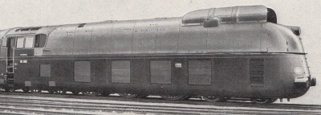
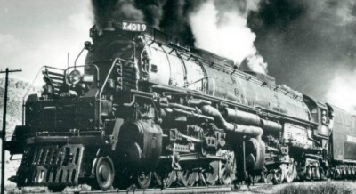
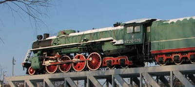
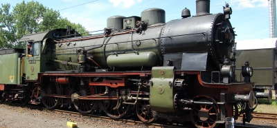
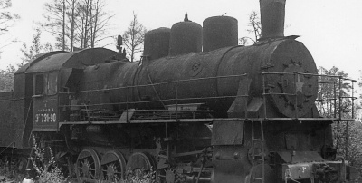

Cамый быстрый

Немецкий паровоз серии 05.
11 мая 1936 года с поездом весом 197т развил скорость в 200км/ч
Cамый быстрый советский

Паровоз Луганского завода типа 2-3-2. Официального наименования серии так и не получил.
В середине 50х годов учавствовал в скоростных испытаниях пассажирских вагонов. В процессе достиг скоростьи 175км/ч
Cамый большой

Класс 4000 дороги Union Pacific Railroad
Получил прозвище "Big Boy". При общем весе в 350т, развивал мощность в 6000л.с.
Cамый большой советский

Пассажирский Паровоз Луганского завода серии ИС20.
Самый мощный советский серийный паровоз. До конца 60х годов обслуживал самые тяжелые пассажирские поезда. При общем весе в 135т, развивал мощность в 2500-3000л.с.
Cамый массовый пассажирский

Паровоз Прусских железных дорог серии P8
Небольшой, надежный и экономичный паровоз применялся на дорогах не только Германии, но и многих других европейских стран, в т.ч. Польши и СССР. Всего построено порядка 3700 едениц.
Cамый распространенный товарный

Русский паровоз серии Э
Строился с дореволюционных времен вплоть до 1957 года, не только на заводах России и СССР, но и в Польше, Венгрии и Румынии. Всего выпущено чуть менее 11 тысяч.